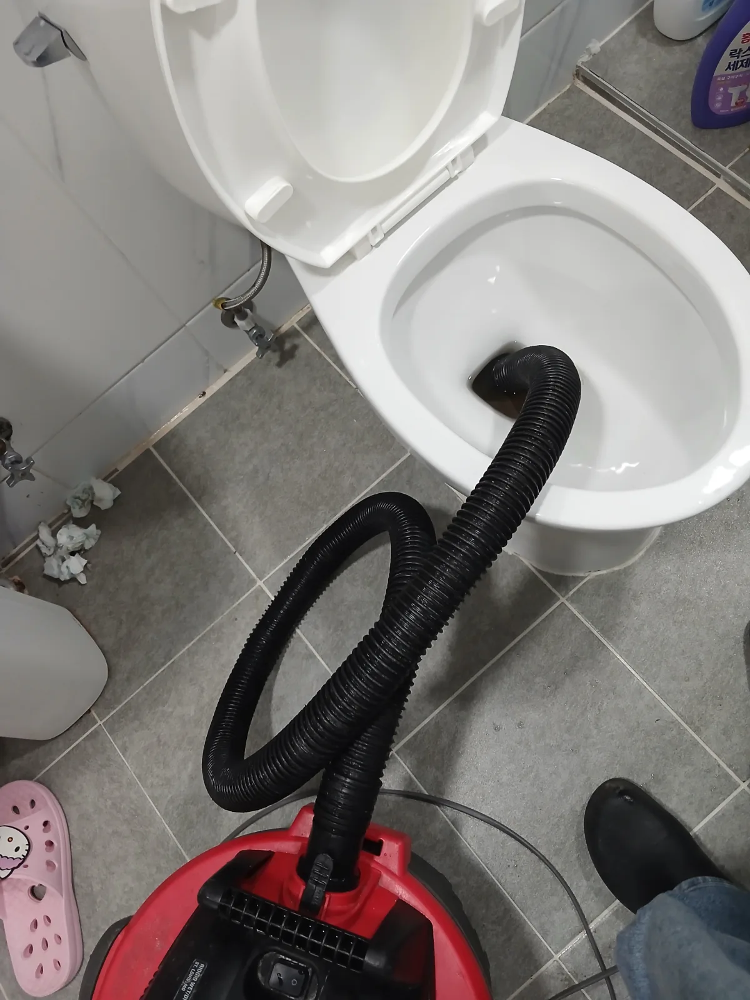
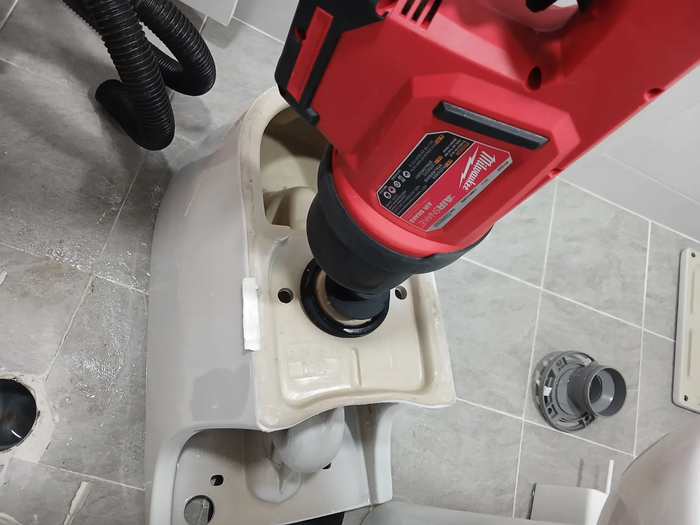

서초구 반포동 변기막힘, 현장 도착 후 진단
고객님께서는 샤워 후 빗질을 하다가 빗을 변기에 빠뜨렸다고 말씀해주셨습니다. 도착 당시 물이 완전히 멈춘 상태는 아니었지만, 평소보다 아주 천천히 내려가고 있었습니다.
물이 조금씩 빠진다고 해서 변기 내부가 정상인 것은 아닙니다. 빗처럼 단단한 물체가 걸려 있으면 남은 틈으로 물은 통과하더라도 휴지와 오물이 걸리면서 막힘이 심해질 수 있습니다. 이번 현장도 빠뜨린 빗을 밖으로 회수하는 데 초점을 맞춰 작업했습니다.
1단계: 증상 확인과 필요한 장비 작업
먼저 석션 장비로 변기 내부에 걸린 빗을 뽑아내는 작업을 시도했습니다. 변기를 탈거하기 전에 흡입 방식으로 이물질을 회수할 수 있는지 확인하는 과정이었습니다.
하지만 석션만으로는 빗이 빠져나오지 않았습니다. 같은 작업을 반복하기보다 변기를 탈거해 하부에서 접근하는 방식으로 전환했습니다.

2단계: 원인 구간 처리와 정상 작동 확인
변기를 탈거한 뒤 뒤집어 하부 배출구 쪽에서 에어건 작업을 진행했습니다. 이물질을 오수관 안쪽으로 밀어 넣는 것이 아니라, 변기 안에 걸린 빗을 반대 방향으로 밀어 밖으로 꺼내기 위한 작업이었습니다.
작업 과정에서 빗과 함께 휴지 뭉치가 나왔습니다. 물이 천천히 내려가던 원인이 변기 내부에 걸려 있던 이물질임을 확인할 수 있었습니다.
변기를 탈거하면서 노출된 오수관도 함께 점검했으며, 확인한 구간에서는 이상이 없었습니다. 오수관에는 별도의 관통이나 세척 작업을 진행하지 않았습니다.

작업 결과와 재발 방지 안내
석션으로 회수되지 않던 빗을 변기 탈거 후 하부 에어건 작업으로 꺼냈습니다. 빗에 함께 걸려 있던 휴지 뭉치도 제거했으며, 노출된 오수관은 점검 결과 이상이 없었습니다.
물이 조금씩 내려가도 이물질이 남아 있을 수 있습니다
단단한 물건을 빠뜨린 뒤 배수가 느려졌다면 물이 내려간다는 이유만으로 계속 사용하지 않는 것이 좋습니다. 물체 주변에 휴지와 오물이 쌓이면 처음에는 느린 배수로 시작했다가 완전한 막힘이나 역류로 이어질 수 있습니다.
빗이나 칫솔을 빠뜨렸다면 물부터 내리지 마세요
눈에 보이고 쉽게 잡을 수 있는 위치라면 장갑을 착용하고 조심스럽게 꺼내주세요. 보이지 않는 곳으로 들어갔다면 긴 도구로 무리하게 밀어 넣거나 반복해서 물을 내리지 않는 것이 좋습니다. 상담할 때 빠뜨린 물건의 종류와 이후 물을 내렸는지 알려주시면 작업 방법을 판단하는 데 도움이 됩니다.
단단한 물체는 세정제로 해결하기 어렵습니다
빗이나 칫솔 같은 물체가 걸린 경우에는 배수관 세정제를 넣어도 물체 자체를 꺼낼 수 없습니다. 약품을 추가하기보다 이물질의 위치와 회수 방법을 확인하는 것이 우선입니다. 이미 약품을 사용했다면 작업 전에 알려주세요.
변기 주변 물건의 보관 위치도 바꿔주세요
빗·칫솔·면도기처럼 떨어뜨리기 쉬운 물건은 변기 바로 위 선반이나 물탱크 위에 두지 않는 것이 좋습니다. 사용하지 않을 때 변기 뚜껑을 닫아두는 것도 물건이 빠지는 사고를 줄이는 데 도움이 됩니다.
최종 조치: 변기 탈거 후 하부 에어건 작업으로 빗과 휴지 뭉치 회수. 노출된 오수관 점검 결과 이상 없음
현장 방문 전 확인하는 비용과 작업 범위
신라건축설비는 현장 증상과 배관 구조를 확인한 뒤 필요한 작업과 예상 비용을 안내합니다. 단순 관통으로 해결되는지, 배관내시경·석션·고압세척 또는 변기 탈거가 필요한지는 현장 상태에 따라 달라집니다. 출장비와 야간 작업비, 추가 장비 비용이 발생할 수 있는 경우 작업 전에 먼저 설명하고 동의를 받은 범위에서 진행합니다.
업체를 선택할 때 확인할 사항
무조건적인 ‘0원’ 표현보다 실제 작업 범위, 추가 비용 조건, 사용 장비와 사후 대응 기준을 확인하는 것이 중요합니다. 해결되지 않았을 때의 비용 기준과 작업 후 동일 증상 발생 시 점검 범위를 사전에 문의해두면 불필요한 분쟁을 줄일 수 있습니다.
서초구 변기막힘 자주 묻는 질문
물이 조금씩 내려가는데도 빗이 걸려 있을 수 있나요?
네. 빗이 변기 내부 통로를 일부 가로막으면 남은 틈으로 물이 천천히 빠질 수 있습니다. 이번 반포동 현장에서도 물은 내려갔지만 배수가 매우 느렸고, 변기를 탈거해 작업하자 빗과 휴지 뭉치가 함께 나왔습니다. 물건을 빠뜨린 뒤 배수 상태가 달라졌다면 이물질이 남아 있는지 확인해야 합니다.
변기 물이 안 내려가거나 역류하면 변기뚫는업체를 불러야 하나요?
물이 차오르는 상태에서는 반복해서 물을 내리지 말고 사용을 멈춰주세요. 단순한 휴지 막힘으로 보이고 넘칠 우려가 없다면 뚫어뻥을 시도할 수 있지만, 해결되지 않거나 물티슈·단단한 물건이 들어간 경우에는 점검을 권합니다. 여러 변기가 동시에 역류하거나 한쪽 사용 시 다른 쪽에서 물이 올라오면 연결된 오수관까지 확인할 필요가 있습니다.
변기 이물질 막힘은 변기를 탈거해야 하나요?
모든 막힘에 변기 탈거가 필요한 것은 아닙니다. 이물질의 종류와 걸린 위치에 따라 석션이나 관통 작업으로 해결할 수 있습니다. 내부에 단단히 걸려 꺼내기 어렵거나 변기 아래 배관을 확인해야 할 때는 탈거가 필요할 수 있으며, 작업 전 이유와 범위를 안내합니다.
변기뚫는업체는 어떤 장비로 작업하나요?
막힘 위치와 이물질 상태에 따라 장비를 선택합니다. 이물질을 꺼낼 때는 석션, 배관 내부 상태를 확인할 때는 내시경, 막힌 구간을 처리할 때는 스프링 장비 등을 사용합니다. 연결된 오수관에 막힘이 있으면 고압세척이 필요할 수 있으며, 모든 현장에 같은 장비와 작업을 적용하지는 않습니다.
변기막힘 비용은 어떻게 정해지나요?
변기 내부의 단순 막힘인지, 이물질 제거와 변기 탈거가 필요한지, 연결된 오수관이나 공용배관까지 작업해야 하는지에 따라 달라집니다. 상담 시 증상과 이물질 투입 여부를 알려주시면 예상 범위를 안내하고, 현장에서 추가 작업이 필요하면 사전에 작업 내용과 비용을 설명합니다. 출장비와 야간 작업비의 별도 발생 여부도 함께 확인해주세요.
변기에서 냄새가 나거나 물이 자주 차오르는 것도 막힘과 관련 있나요?
배수가 느려지면서 물이 차오르면 막힘과 관련이 있을 수 있습니다. 다만 냄새는 변기 안에 냄새를 차단하는 물인 봉수가 부족하거나 연결부에 문제가 생겨 발생할 수도 있어, 냄새만으로 막힘을 단정하기는 어렵습니다. 배수 속도와 수위 변화, 냄새가 나는 위치를 함께 확인해야 합니다.
변기막힘 서울·경기 출동지역
신라건축설비는 서초구 반포동 현장을 포함해 서울 25개 구와 경기도 31개 시·군의 배관 문제를 상담합니다. 현장 거리와 기사 배정 상황에 따라 출동 가능 여부를 먼저 안내드립니다.
서울 전 지역
강남구 · 강동구 · 강북구 · 강서구 · 관악구 · 광진구 · 구로구 · 금천구 · 노원구 · 도봉구 · 동대문구 · 동작구 · 마포구 · 서대문구 · 서초구 · 성동구 · 성북구 · 송파구 · 양천구 · 영등포구 · 용산구 · 은평구 · 종로구 · 중구 · 중랑구
경기도 주요 출동지역
수원시 · 용인시 · 고양시 · 화성시 · 성남시 · 부천시 · 남양주시 · 안산시 · 평택시 · 안양시 · 시흥시 · 파주시 · 김포시 · 의정부시 · 광주시 · 하남시 · 광명시 · 군포시 · 양주시 · 오산시 · 이천시 · 안성시 · 구리시 · 의왕시 · 포천시 · 양평군 · 여주시 · 동두천시 · 과천시 · 가평군 · 연천군